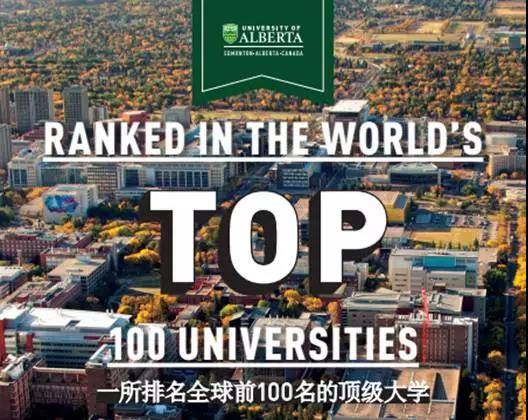

彼得德鲁克说：“一个企业只能在企业家的思维空间里成长,一个企业的成长被其经营者所能达到的思维空间所限制!”学习是打开思维空间即企业成长最快速的方式！
领导力就是把一个人的视野提到更高的境界，把一个人的成就提到更高的标准，锤炼其人格，使之超越通常的局限。然后才能把一个人的潜力、持续的创新动力开发出来，让他做出他自己以前想都不敢想的那种成就。
—— 彼得·德鲁克
“一头绵羊带领的一群狮子，敌不过一头狮子带领的一群绵羊。”领导者和管理者对于团队组织的作用，就是这么重要。当今的领导者和管理者面临着越来越复杂变化的环境，提高驾驭复杂组织系统的能力是组织取得成功的关键。领导者和管理者在复杂的组织系统中如何行动，在很大程度上取决于他们看待和认识组织的方式。
12月9日加拿大阿尔伯塔大学工商管理硕士学位（MBA）项目开班论坛邀请清华大学陈国权教授带来《时空领导力》课程。陈教授首次将组织比喻成时空系统，提出了领导和管理的时空理论，即领导者和管理者可以从时间和空间的视角来同时对组织进行认识和设计、开展相应的分析和决策、并采取适当的行动和举措。同学们通过建立时空领导力，提高时空情商和时空智商，提升时空智慧，从而使得组织提高成效，减少决策偏差，得到决策的更满意解，建立竞争优势，保持可持续的生存和健康和谐的发展。 论坛当天，加拿大阿尔伯塔大学商学院院长等校方领导也会出席并为开班论坛致辞。
出席嘉宾介绍
Dean Joseph Douce
●教授，阿尔伯塔大学商学院院长
Edy Wong
●加拿大阿尔伯塔大学商学院副院长兼国际商学中心主任
●研究领域：国际金融与经济发展、供应链管理
授课老师：陈国权教授
●清华大学经济管理学院教授、博士生导师
●国家杰出青年科学基金项目获得者
●教育部长江学者特聘教授
●组织学习和学习型组织研究领域开创者和领导者
●国际领导和管理的时空理论开创者
课程大纲
●时空领导力的意义和内涵
●时空领导力的理论和方法
●时空领导力的目标和境界
时间与地点
活动时间：2017年12月9日（周六）
上午9:00-12:00；下午13:30-16:30
活动地点：深圳清华大学研究院
报名咨询：
请在右侧留言或致电400-115-1005（12小时*7天）报名
获取本周课程表请电话咨询400-115-1005（12小时*7天）
温馨提示：
1、为了便于您更全面的了解课程，有意向报读的话可以申请免费试听半天正式课程（推荐上午）。若申请下午继续试听，需填写报名表及缴纳报名费5000元。
2、请遵守课堂纪律，因您是试听学员，所以不主动邀请您参与发言和讨论，谢谢配合。若有相关疑问，可在课程所预留的互动时间或课间与老师或同学交流。请自带记录所用笔与笔记本；请上课时将手机调至震动或静音，并在教室外通话。
加拿大阿尔伯塔大学
工商管理硕士学位（MBA）班热招中

不出国门，读全球百强名校MBA
免全国联考，无雅思托福要求
所获硕士学位与赴加留学一致
无语言障碍（中文授课为主，英文授课配翻译）
联系方式：400-115-1005 邮箱:fub@tsinghua-sz.org
地址：深圳市南山区高新科技园南区高新南七道19号深圳清华大学研究院五楼


版权所有：深圳清华大学研究院 备案：粤ICP备11063336号-3 深圳网站建设：沙漠风